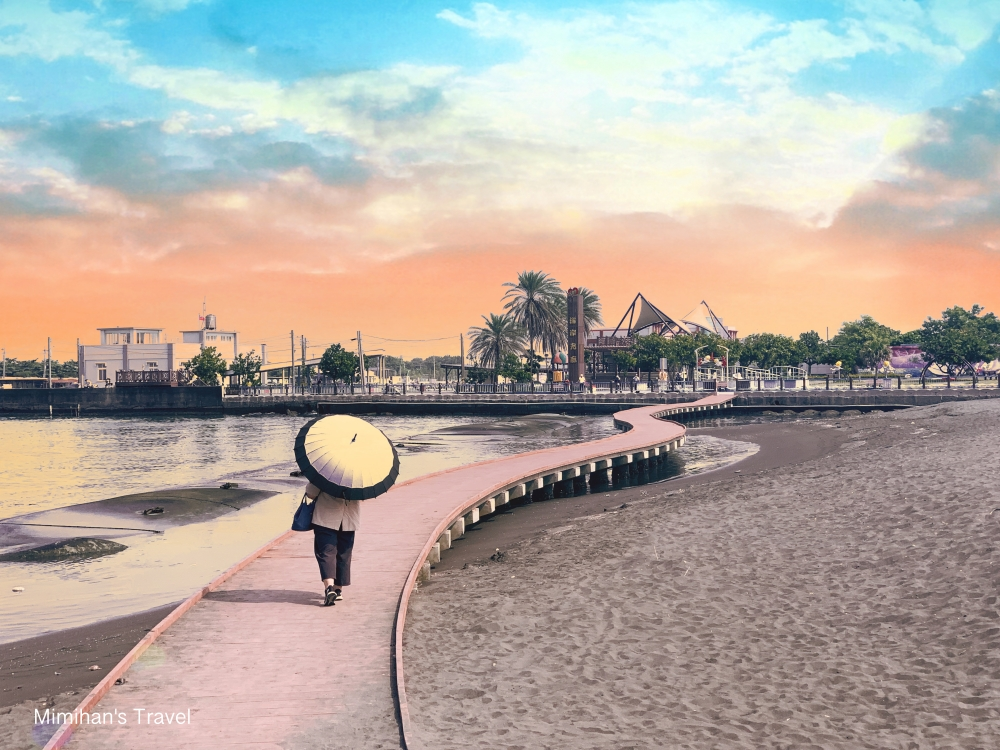
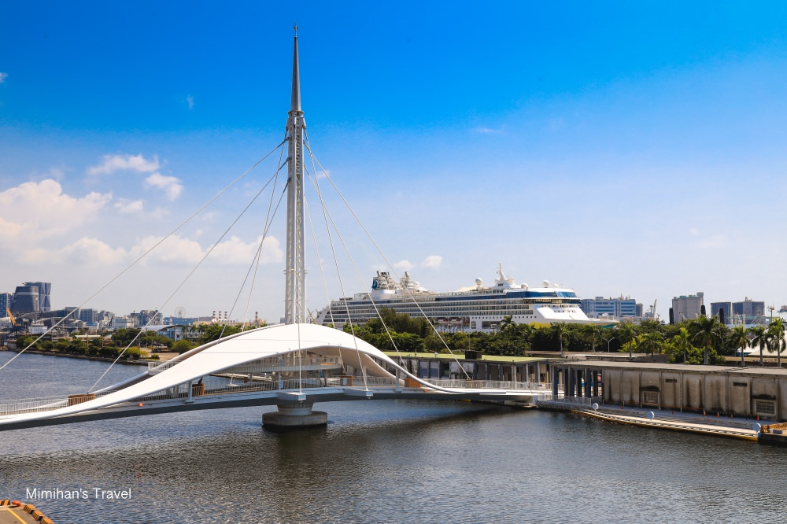
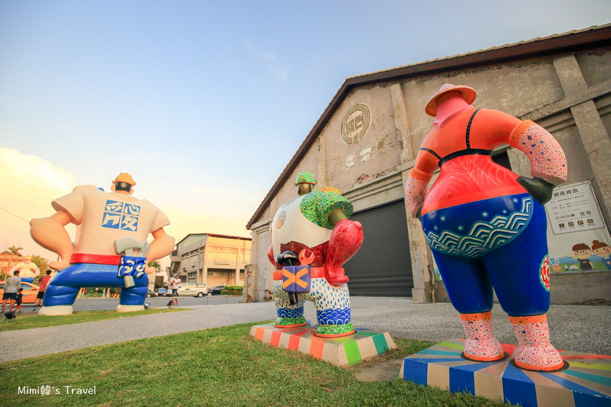

彌陀漁港海岸光廊
彌陀南寮漁港海岸光廊好拍又好玩，免費免門票，彷彿飄在海上的木棧道拍照效果好，海邊還有沙灘溜滑梯、兒童遊戲區和彩繪堤防，有設置淋浴間，玩樂之餘還能感受漁港風情，不管大人小孩都能在這裡找到樂趣。提醒大家垃圾一定要自己帶走，給大家優質休閒環境唷～

轉轉音樂大港橋
高雄新景點地標！連接著愛河兩岸的「轉轉音樂大港橋」是目前最熱門的高雄IG打卡景點，橋身以貝殼和海豚作為設計概念，可以串連棧庫群、駁二特區以及水岸觀光廊道，更有趣的是需要通行時橋還可以旋轉讓船隻通過。

駁二藝術特區
在高雄駁二藝術特區中不定會期舉辦的各種展覽，繽紛又充滿創意的裝置藝術也會輪流在此呈現，就連五月天演唱會中的大黃蜂也在這裡，花上一整天在這裡逛展、拍照、看書、喝咖啡也是很棒的玩法吧！需要規劃高雄住宿的話，城市商旅駁二館就在旁邊，超棒的高樓景觀很值得推薦唷 😆
